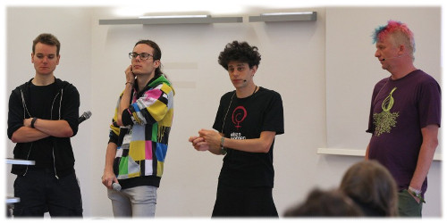

A status update on Debian's reproducible builds
Debian's reproducible builds effort has major implications for the trustability of individual software packages and the system as a whole. Implementing reproducible builds is also a complex undertaking, and DebConf 2015 featured several sessions that dealt with aspects of the work. The most comprehensive talk was the team report, led by Jérémy "Lunar" Bobbio and Holger Levsen and joined by Eduard "Dhole" Sanou and Chris Lamb.
The essence of the reproducible-build problem, as Bobbio explained it, is that free software typically provides source that can be studied (and verified) and binaries that can be used for any purpose, but it does not provide a proof that the binaries were created from the verified source. There are proof-of-concept exploits that highlight the dangers of this situation, such as Mike Perry and Seth Schoen's kernel exploit presented [PDF] at the 2014 Chaos Communication Congress.
The solution is to enable anyone to reproduce a bit-for-bit identical package from a given source tree, and that is what the Debian team has been working toward since 2013. The effort impacts a number of parts of the Debian project, including packaging tools, various compilers and build tools, Debian's infrastructure, and quite a few individual software packages.
Reproducibility work so far
The grunt work of testing a package for reproducibility involves building the package, saving the result, and then repeating the build with slight alterations to the build environment. The reproducibility team has a set of Jenkins jobs running a battery of such tests on its own mirror of the Debian archive. The variations tested include hostname, kernel version, username and UID/GID running the build, time zone, and locale. At the moment, variations for some other factors (including CPU type and the exact timestamp) are not tested, although there is work in progress to support more variants.
Within that framework, Levsen explained, well over 75% of the packages in Debian "unstable" can be built reproducibly on the amd64 architecture—but the necessary changes have not been merged into the packages in the main Debian archive, and quite a bit more remains to be done before such merging will be considered. The team recently added armhf to the test pool and will be adding ppc64el soon; Levsen said it would support hardware from other architectures, too, if anyone has hardware to donate for the effort.

The most recent work includes the dh-strip-nondeterminism add-on for debhelper, which normalizes the contents of various problematic file formats. The set of formats handled includes several archive formats, which may record filesystem timestamps and permissions irrelevant to final archive.
The team also wrote a utility program called diffoscope, which shows the differences between two packages (or directory trees). Diffoscope works "in depth," Bobbio explained: it recursively unpacks archives, uncompresses PDFs, unpacks Gettext files, and disassembles binaries. That allows it to look beyond differences in the bytes between two archives to the "human readable difference" in the original files.
In addition, the team has drafted some proposals that will affect build and packaging tools. The first is .buildinfo, which is a Debian package control file. A .buildinfo file will be used to record the details of the build environment for a package so that the same conditions can be recreated later.
The second is SOURCE_DATE_EPOCH, a timestamp environment variable that build tools can use to export the last-modification date of the source. As Levsen explained, once all binaries are bit-for-bit compatible, the "interesting" factor becomes not the build timestamp, but the last time when the source was altered. The SOURCE_DATE_EPOCH timestamp is also useful for packages like help2man or epydoc that are used to process documentation, for which the team has already caught and fixed many bugs. More challenging is the process of persuading the maintainers of some of these upstream tools that SOURCE_DATE_EPOCH is a useful bit of information to report.
Chris Lamb then discussed some common reproducibility bugs and how to fix them. Last-modification-time timestamps embedded in files are a common problem: they change the file without adding substantive value. Some of the fixes border on being trivial; for example, gzip records a timestamp by default when compressing a file, but that timestamp can be suppressed by adding the -n flag. The internal timestamp field in a PNG file, however, must be stripped out with ImageMagick or a similar tool, which is more work. Various programming languages, such as Erlang and Ruby, record problematic timestamps whenever they process a file, he said, while simple configure scripts often record unnecessary information like the current time and hostname.
There are also several issues related to the ordering of files. For example, in an archive, if the alphanumeric ordering used by the filesystem differs (as can happen if the system locale is changed), two tar archives of identical files can produce differing results. The fix is to pipe the list of files through sort before it goes to tar. Perl exhibits a similar problem; the hash order produced by Data::Dumper is nondeterministic.
For many of these problems, Lamb has found fixes, but there are others that will require developers to do some work. For example, code that uses the current time as a lazy form of unique identifier will need to be rewritten. Most of the reproducibility fixes the team has implemented are not "crazy," he said, but the further upstream the fix is needed, the less likely it is to get accepted. Nevertheless, Lamb reported that the team had created more than 600 reproducibility-support patches, averaging about two new patches per day.
A look ahead
So far, many of the reproducibility bugs caught and fixed have been in the source packages themselves but, moving forward, work will have to be done on Debian's packaging tools and even its infrastructure. Bobbio noted that there are several open bugs against dpkg (including the bug to add support for .buildinfo files). Similarly, debhelper, cdbs, and sbuild all need to be patched.
There is not always agreement, though, about where some of the fixes required for reproducible builds should be made. For example, the bug to make mtime timestamps produced through dpkg deterministic could be solved by patching dpkg, debhelper, or tar. More discussion is needed, Bobbio said, and he invited volunteers to join in.
Other fixes will impact the Debian infrastructure itself. For example, reproducible builds need to be performed using a fixed build path, which will mean implementing changes on the Debian build server. Similarly, .buildinfo files would have to be accessible to users anywhere in the world in order for those users to actually perform their own reproducible builds; that means that roughly 200,000 files (for all of the packages across all of Debian's architectures) will need to be published somewhere, perhaps in the Debian archive itself, and perhaps as a new service.
But the final "patch," Bobbio said, will have to be to Debian policy. The reproducible builds team would like to add "source must build in a reproducible manner" requirement to a new section 4.15—but, naturally enough, that is a change that everyone in the project needs to think about and have an opportunity to weigh in on.
The session ended with the team providing some practical steps that Debian developers and package maintainers can take to fix reproducibility problems in their packages. The status of any package can be checked online by visiting reproducible.debian.net. Users can also test some reproducible builds locally. There is a script available for pbuilder, although it only works on the packages in the patched, reproducible-build mirror.
Reproducible builds have benefits beyond security, of course. The speakers listed several during the talk, such as the ability to create debug packages for a binary at any time (including long after the binary was built), earlier detection of failed builds, and better testing of development tools. Given the response to the talk and the questions asked by audience members, this is clearly a project that many in the Debian community see as an important next step—even if it is one that still has many tasks, bugs, and open questions left to address.
[The author would like to thank the Debian project for travel assistance to attend DebConf 2015.]
| Index entries for this article | |
|---|---|
| Security | Deterministic builds |
| Conference | DebConf/2015 |
Posted Sep 17, 2015 9:12 UTC (Thu)
by epa (subscriber, #39769)
[Link] (2 responses)
(I never understood why tools like sort and tar, which are hardly anything an end user would use directly, had to start doing locale sort by default rather than just byte order, which works sanely enough for both ASCII and UTF-8. But I guess it's too late to change now.)
Posted Sep 17, 2015 10:52 UTC (Thu)
by hummassa (guest, #307)
[Link] (1 responses)
I actually use sort and tar as an "end user" a lot, BUT I agree with you that locale-awareness should be a nondefault option. My default locale is non-english, non-US, but mostly I want things sorted bytewise... There are a lot "env LANG= something-or-other" in my work scripts.
Posted Sep 17, 2015 19:01 UTC (Thu)
by josh (subscriber, #17465)
[Link]
Posted Sep 17, 2015 10:10 UTC (Thu)
by mjthayer (guest, #39183)
[Link] (1 responses)
While they are at it, they might start including sources at said fixed build path in debug symbol packages. That is one point where Red Hat and friends are well ahead at present.
Posted Sep 17, 2015 12:02 UTC (Thu)
by Lunar^ (guest, #47323)
[Link]
Please also note that debugedit, while allowing to modify these paths post-processing, will not produce deterministic builds accross build paths currently. That's because debugedit will stomp on the previous bytes without reordering the string hash table. So the table order will vary depending on the original path. If someone would improve debugedit to fix this, I believe we should try to lift the restriction on having to build in the same path.
Posted Sep 17, 2015 15:47 UTC (Thu)
by jnareb (subscriber, #46500)
[Link] (1 responses)
There are rare cases where you should be using Data::Dumper (it is not good plain text serialization mechanism), but there is $Data::Dumper::Sortkeys variables if you want reproductible output.
Nb. random hash order is a feature - a protection against DoS attack on hash's hash function.
Posted Sep 24, 2015 12:53 UTC (Thu)
by Wol (subscriber, #4433)
[Link]
It's also an inherent part of a linear hash algorithm - buckets are created and destroyed continuously, and must be able to hold multiple keys. So a linear scan of the hash table - while keys will be approximately in the same order - will return keys with an identical hash function in random order. Sorting them in their buckets would be an unacceptable overhead, even if it's only a small overhead.
(I don't know for certain, but linear hashing definitely isn't unique to Pick - it's used by BerkeleyDB aka Sleepycat, and I believe it's the algorithm behind hashes in Perl and Python.)
Cheers,
Sorting filenames
The fix is to pipe the list of files through sort before it goes to tar.
But sort too is affected by the locale setting. Wouldn't setting LC_ALL=C when building be a simpler and more effective fix?
Sorting filenames
Sorting filenames
A status update on Debian's reproducible builds
A status update on Debian's reproducible builds
A status update on Debian's reproducible builds
Perl exhibits a similar problem; the hash order produced by Data::Dumper is nondeterministic.
A status update on Debian's reproducible builds
Wol